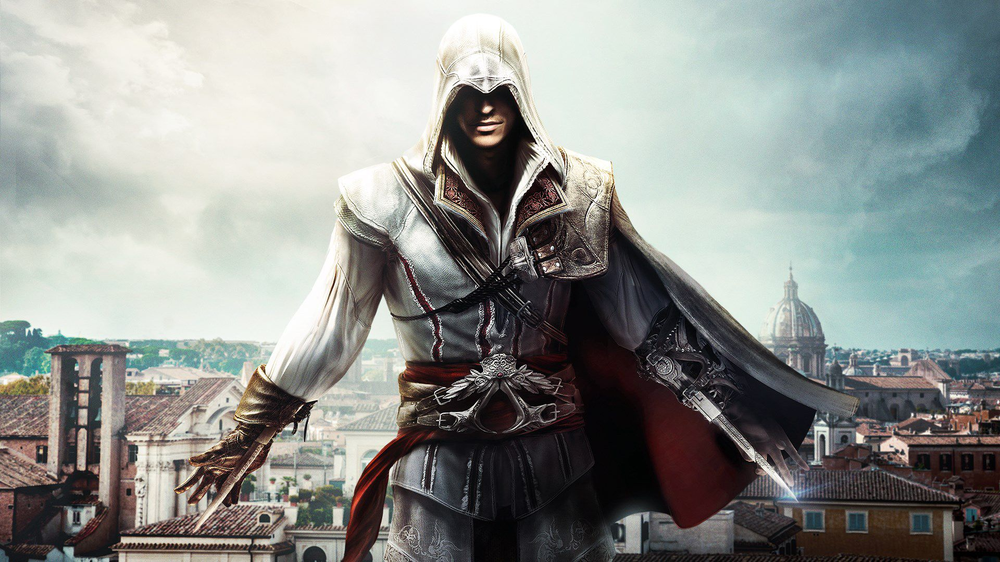

Saga Assassin's Creed
 A história de Assassin’s Creed: Renascença gira em torno do protagonista Ezio Auditore da Firenze, um jovem de família rica e nobre da cidade de Florença, na Itália. Em meados dos anos 1470, quando a história começa, Ezio, até então com 17 anos de idade, só pensava em bagunça, brigas de rua e garotas, mas isso estaria prestes a mudar.
Após a misteriosa prisão de seu pai, Giovanni, que era um banqueiro da cidade, e também de seus dois irmãos (o mais velho, Federico, e o caçula, Petrucio) a vida do garoto vira de cabeça para baixo. Assim como o restante da família, Ezio fica bastante abalado, e decide escalar a torre onde seu pai se encontrava para conversar com ele. Nesse momento, Giovanni pede a Ezio que pegue uma carta em seu escritório e entregue a Umberto Alberti, um homem influente na cidade e, supostamente, amigo da família. Umberto tranquiliza Ezio, diz que a carta contém as provas da inocência de seu pai e que as apresentaria em julgamento.
A trama começa de fato no dia seguinte, no julgamento em praça pública, quando Ezio, para sua surpresa, encontra o pai e os irmãos com cordas enroladas em seus pescoços e, ao lado deles, Umberto depondo contra a família. Quando, de repente, o carrasco enforca seus entes queridos, Ezio entra em desespero, grita contra o traidor e jura vingar a morte dos familiares. Após ser perseguido pelos guardas, o garoto consegue escapar e encontrar sua mãe, Maria, e a irmã, Cláudia, escondidas em um bordel antes de fugirem para a cidade vizinha, onde diversos segredos sobre a família seriam revelados por seu tio, Mario.
Ezio descobre que sua família pertence à ordem dos Assassinos, e que seus inimigos, os Templários, estão espalhados por toda a Itália. Esta teria sido, inclusive, a causa do assassinato de seus parentes. Umberto seria um membro dos Templários, e Giovanni um importante Assassino.
Assassin’s Creed II retrata a busca incansável de Ezio por vingança, e também a guerra milenar entre Assassinos e Templários. Nessa grande aventura, o protagonista passa por grandes centros do Renascimento, tais como Florença, Veneza e Roma, e conhece várias personagens de grande importância histórica como Leonardo da Vinci e Nicolau Maquiavel. O livro também faz alusão a importantes famílias da época, como os Médici e os Borgia.
No universo fantasioso de Assassin’s Creed: Renascença, Ezio se torna um grande amigo de Leonardo, que fabrica armas para o protagonista. Maquiavel, por sua vez, é o líder da ordem dos Assassinos.
Ao longo dos mais de vinte anos que se passam, o protagonista aperfeiçoa suas habilidades de combate com a ajuda de seu tio, Mario, e se torna um exímio lutador, utilizando espadas e a famosa “lâmina escondida”, lendária arma do clã dos assassinos que foi aprimorada por Da Vinci.